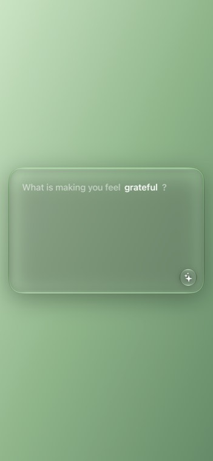
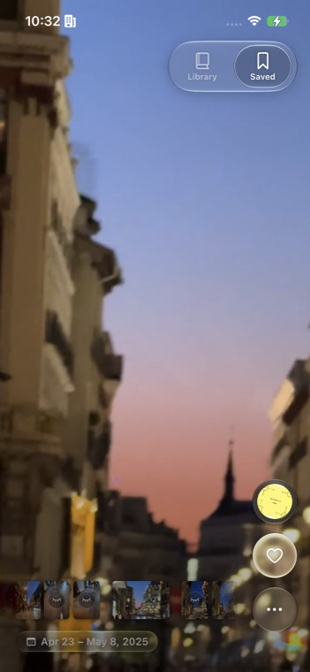
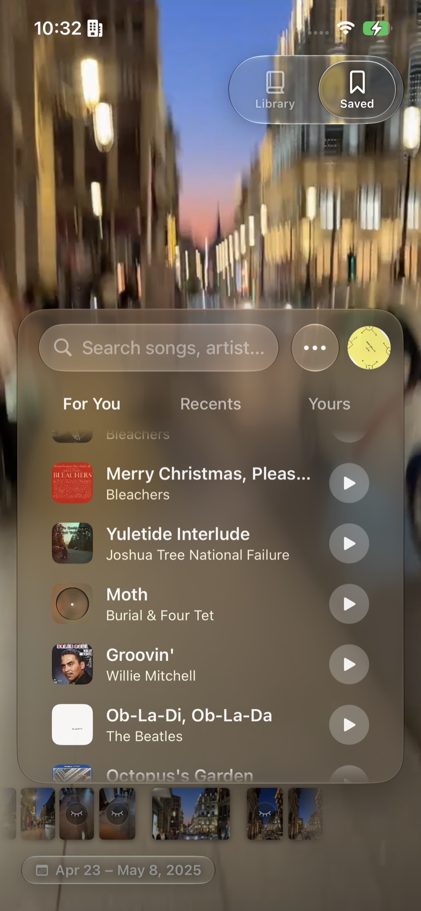
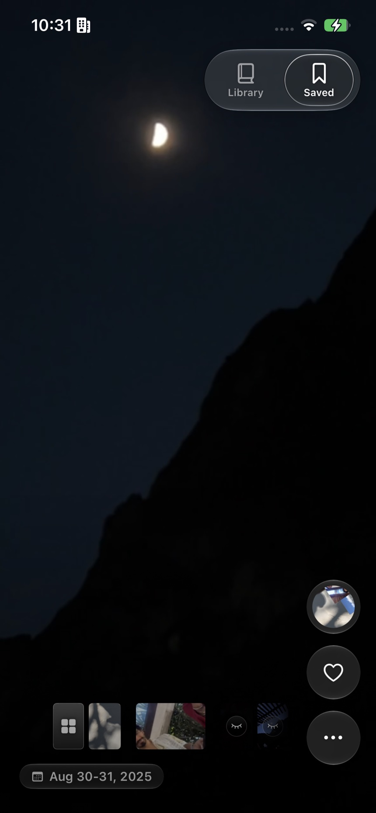
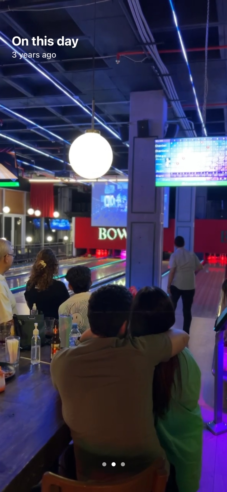
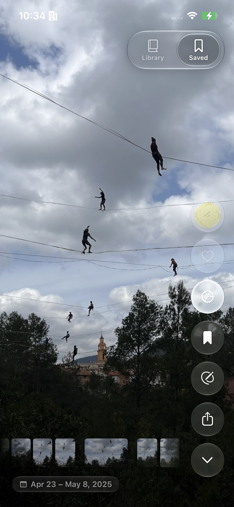

Personal project · 2025 to present
June: a photo journal you scroll like a feed
A photo journal for iPhone that takes the scroll mechanics of social apps and points them at your own life. Designed and built solo in Swift and UIKit.



Your own photos, your own words, your own music. June is one scroll through all three.
The idea
Social apps spent a decade making exploration feel effortless. The problem was never how they worked, it was what they asked us to look at. June points the same mechanics at your own life.
Designing and building it
I designed June and then built all of it in Swift and UIKit: the feed that assembles itself out of your photo library, the journal, the music layer, and the loading pipeline underneath that keeps it all moving. Designing and building the same product means no decision gets handed over half finished, and every idea gets tested against what the phone can actually do on the same day I have it.
Nobody wants to face a blank page
Journaling apps open on an empty screen and a blinking cursor, June never starts from nothing. It opens on your life already arranged: today, yesterday, the trip you took last month, grouped without you asking for it. Writing is one tap away from a photo you already care about, and the prompt is waiting for you: What is making you feel grateful?
A trip is not a distance
The feed groups your photos on its own, and getting the trip part right took two tries.
The obvious signal is distance: anything far from home is a trip. That is wrong in both directions. The gym is across the city and it is not a trip. The house your family drives to every December is three hundred kilometers away and it is not a new place, it is a habit.
So June stopped asking how far and started asking how often. If you keep returning on a cadence, it belongs to your routine, whatever the distance. If you went once and stayed a while, that was a trip. Same photos, same coordinates, a better question asked of them.
Memory has a soundtrack
Four seconds of the right song and you are back: the car, that summer, who you were sitting next to. A photo takes longer to do that, and sometimes it never gets there at all.
So a memory in June can carry a song, and it starts exactly where you want, because the moment is not the intro, it is the chorus.
When June suggests one, it suggests one of yours: what you actually played that month, out of your own library. Never the biggest hit of that year. A chart cannot tell you what was on in the car.
The app decides, you stay in charge
June makes a lot of calls for you. It groups your days, quietly sets aside the receipts and screenshots that are not memories, brings back a photo from five years ago on its anniversary, and offers a song for a collection. Finding the right amount of confidence for all of that took real editing.
An early version applied songs automatically: if you had pinned one near that place before, it just put it there. It was clever and it was wrong. It answered a question nobody had asked, and undoing it cost more than doing it by hand would have. Now the picker offers it and you tap. The intelligence stayed, the presumption went.
The same rule holds everywhere else. An entry has no color until you pick a feeling, because guessing someone's mood from their camera roll is not a guess an app should make. Telling June you are not interested in a suggested song teaches June only, it never touches your music library. And deleting is a queue rather than a dialog: photos gather as you go, undo takes them back one at a time, and nothing actually leaves until you say so.
Speed is part of the feeling
Most apps put friction between you and what you meant to do. June responds instantly, confirms with a haptic, and keeps undo within reach. Organizing an afternoon of photos becomes one continuous motion instead of forty confirmation dialogs.
An app asks "Are you sure?". June assumes you probably are, and gives you undo if you were not.
Waiting got the same treatment. A photo app spends its life waiting on iCloud, on disk, on the decoder, and most apps show you that as a grey box. In June a photo that has not arrived yet appears as a soft blurred version of itself and then sharpens, so the page is never empty and never lies about what is coming. I tried a frosted panel over the image first. It looked more finished and it read as a bug, because it covered the photo instead of previewing it. Behind all of it sits one rule I refuse to break: no black screens, ever.
The part I built and then took out
June used to tune its own loading. It measured how fast your device and your connection actually were and adjusted how far ahead it read. It worked, and I retired it.
Once I read the numbers it had settled on, they were nearly the same across every device I tested. So I took its output, wrote those values in as constants, and deleted the machinery that produced them. Same speed, far less that can go wrong.
That is the trade I keep making on this project. A clever mechanism has to earn the complexity it costs, and often enough the honest version of the result is a smaller thing.
Where it is now
June is on TestFlight, with the App Store release in progress.
The screens


